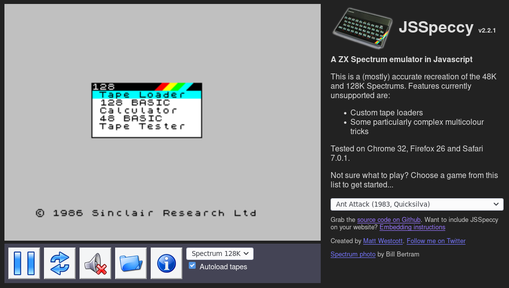

t, twitter from the terminal

I recently discovered an intresting application for interacting with twitter from the terminal. It is a pain to setup because of twitter's api process but other than that works perfectly! This application is a great pair with rtv (reddit terminal viewer). Projects like this are making it easier and easier to commplete all of your social activites from the command line. 't' has many features that give extended features to twitter. For example, to favorite the last 10 tweets that mention you run:
t mentions -n 10 -l | awk '{print $1}' | xargs t favoriteSetup t by following their guide here, and check out the many other features that are listed on the guide. Enjoy!
ZX Spectrum emulator from the Hanselminutes podcast
Here is an awesome ZX Spectrum emulator I found from the Hanselminutes podcast! Just click on the photo to try it out.
Here is a fun article you might enjoy! Credit to MaxLaumeister
Enzo Barrett
Hello and welcome to my site/blog. Below you will find some intresting links you might enjoy! Have fun!